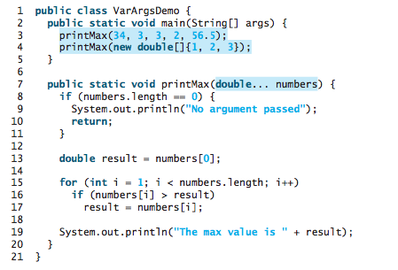
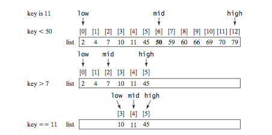
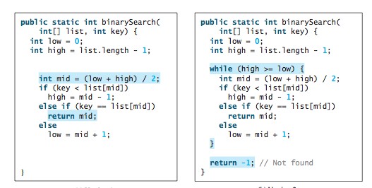
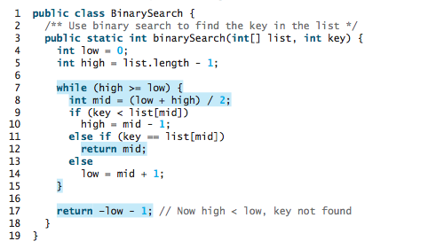
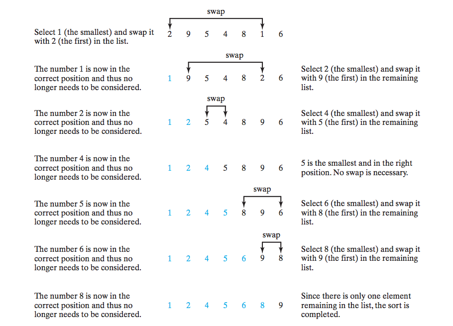
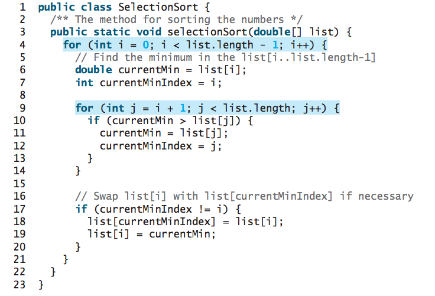

CS201: Introduction to Programming
Lecture 7 / Single Dimensional Array
Reading assignment: chapter 7
Lesson Objectives
- To describe why arrays are necessary in programming
- To declare array reference variables and create arrays
- To obtain array size using arrayRefVar.length and know default values in an array
- To access array elements using indexes
- To declare, create, and initialize an array using an array initializer
- To program common array operations (displaying arrays, summing all elements, finding the minimum and maximum elements, random shuffling, and shifting elements)
- To simplify programming using the for each loops
- To copy contents from one array to another
- To develop and invoke methods with array arguments and return values
- To define a method with a variable-length argument list
- To search elements using the linear or binary search algorithm
- To sort an array using the selection sort approach
- To use the methods in the java.util.Arrays class
- To pass arguments to the main method from the command line
Introduction
A single array variable can reference a large collection of data. Java and most other high-level languages pro- vide a data structure, the array, which stores a fixed-size sequential collection of elements of the same type.
Once an array is created, its size is fixed. An array reference variable is used to access the elements in an array using an index.
Integer[] k = new Integer[5];
In the above code snippet, we declare that $k$ is a reference variable to an array of Integers. It also creates array of 5 Integer objects. To use the array:
k[0] = 1; k[1] = 2; k[2] = 3; k[3] = 4; l[4] = 1000;
Array Initializer
Java has a shorthand notation, known as the array initializer, which combines the declaration, creation, and initialization of an array in one statement using the following syntax:
double[] d = { 1.0, 2.0, 3.0 } ;
Array Processing
Since array size is known, it's natural (and perhaps obvious) to a for construct.
double[] d = new double[10];
for (int i = 0; i < 10; ++i) {
d[i] = 1.0 * i;
}
Here are a number of patterns on how array are used:
Initializing arrays with input values: The following loop initializes the array myList with user input values.
Initializing arrays with random values: The following loop initializes the array myList with random values between 0.0 and 100.0, but less than 100.0.
Displaying arrays: To print an array, you have to print each element in the array using a loop like the following:
for (int i = 0; i < myList.length; i++) {
System.out.print(myList[i] + " ");
}
Summing all elements: Use a variable named total to store the sum. Initially total is 0. Add each element in the array to total using a loop like this:
double total = 0;
for (int i = 0; i < myList.length; i++) {
total += myList[i];
}
Finding the largest element: Use a variable named max to store the largest element. Initially max is myList[0]. To find the largest element in the array myList, compare each element with max, and update max if the element is greater than max.
double max = myList[0];
for (int i = 1; i < myList.length; i++) {
if (myList[i] > max)
max = myList[i];
}
Finding the smallest index of the largest element: Often you need to locate the largest element in an array. If an array has multiple elements with the same largest value, find the smallest index of such an element.
double max = myList[0];
int indexOfMax = 0;
for (int i = 1; i < myList.length; i++) {
if (myList[i] > max) {
max = myList[i];
indexOfMax = i;
}
}
Random shuffling: In many applications, you need to randomly reorder the elements in an array.
for (int i = myList.length - 1; i > 0; i--) {
int j = (int)(Math.random() * (i + 1));
double temp = myList[i];
myList[i] = myList[j];
myList[j] = temp;
}
Shifting elements: Sometimes you need to shift the elements left or right. Here is an example of shifting the elements one position to the left and filling the last element with the first element:
double temp = myList[0];
for (int i = 1; i < myList.length; i++) {
myList[i - 1] = myList[i];
}
myList[myList.length - 1] = temp;
Simplifying coding: Arrays can be used to greatly simplify coding for certain tasks.
String[] dayOfTheWeek = { "Monday", "Tuesday", "Wednesday",
"Thursday", "Friday", "Saturday", "Sunday" };
int d = (int)(Math.Random() * 7);
String randomDay = dayOfTheWeek[d];
Foreach Loop
When you do not need to worry about the index position of an array, use the "Foreach" loop.
for (double e: myList) {
System.out.println(e);
}
Variable Length Array List
A variable number of arguments of the same type can be passed to a method and treated as an array.
Java treats a variable-length parameter as an array. You can pass an array or a variable number of arguments to a variable-length parameter. When invoking a method with a variable number of arguments, Java creates an array and passes the arguments to it.
Searching an Array
Searching is the process of looking for a specific element in an array—for example, discovering whether a certain score is included in a list of scores.
- Linear Search: one element at a time. Time to search an array of size $n$ is $O(n)$
- Binary Search: Binary search is the other common search approach for a list of values. For binary search to work, the elements in the array must already be ordered. The time to do binary search is $O(log_2 n)$
If an array is sorted, binary search is more efficient than linear search for finding an element in the array.

Binary Search Algorithm
Sorting Arrays
Sorting, like searching, is a common task in computer programming. Many different algorithms have been developed for sorting. This section introduces an intuitive sort- ing algorithm: selection sort.
Suppose the you have the following array:
int[] a = { 2, 9, 5, 4, 8, 1, 6};
And we would like to sort it. What's the best approach?
Selection Sort Algorithm
Array Class
The java.util.Arrays class contains useful methods for common array operations such as sorting and searching.
double[] numbers = {6.0, 4.4, 1.9, 2.9, 3.4, 3.5};
java.util.Arrays.sort(numbers); // Sort the whole array
java.util.Arrays.parallelSort(numbers); // Sort the whole array
char[] chars = {'a', 'A', '4', 'F', 'D', 'P'};
java.util.Arrays.sort(chars, 1, 3); // Sort part of the array
java.util.Arrays.parallelSort(chars, 1, 3); // Sort part of the array
Commandline Arguments
You can pass strings to a main method from the command line when you run the program.
java lab 1 2 3
TO extract arguments in your program, we refer the arguments as:
String a = args[0]; String b = args[1]; String c = args[2];
Lab Exercises
For each of the following exercises, practice developing and running your program with Eclispe. Note that the lab assignments are not graded.
- Write a program that reads words into array of String